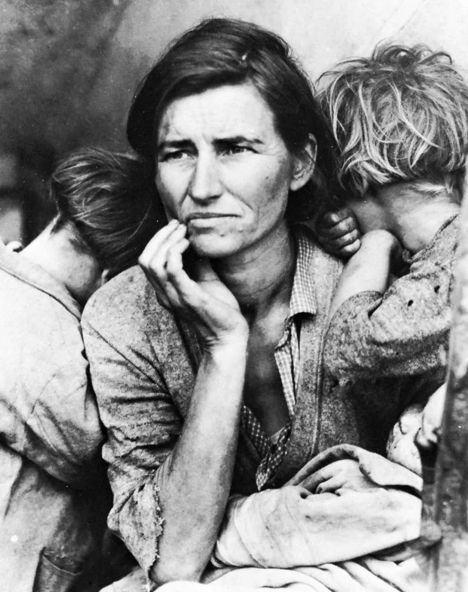

Portfólio
Rodrigo dos Santos
Uma breve história e trabalhos que foram
desenvolvidos por esse que vos fala.
O pensamento crítico é uma habilidade essencial no ambiente profissional e pessoal, pois permite analisar situações de forma lógica, questionar informações, identificar soluções eficientes e tomar decisões bem fundamentadas. Ele ajuda a evitar erros impulsivos, filtrar opiniões tendenciosas e solucionar problemas de maneira criativa e eficaz. Em um mundo repleto de informações, o pensamento crítico é fundamental para diferenciar fatos de suposições, garantindo uma abordagem clara e objetiva em qualquer desafio.
A liderança é uma habilidade fundamental que vai além de simplesmente gerenciar pessoas. Ela envolve inspirar, motivar e guiar equipes em direção a objetivos comuns, criando um ambiente colaborativo e produtivo. Um bom líder sabe ouvir, delegar tarefas de maneira eficaz e tomar decisões estratégicas, mesmo sob pressão. Além disso, a liderança fortalece a confiança entre os membros da equipe, estimula o desenvolvimento pessoal e profissional e contribui para o alcance de resultados sustentáveis. Em qualquer contexto, ser um líder eficaz é essencial para promover mudanças positivas e atingir o sucesso coletivo.
A adaptabilidade é a habilidade de se ajustar rapidamente a mudanças e novos desafios, sendo essencial em um mundo em constante transformação. Pessoas adaptáveis conseguem manter a calma diante de imprevistos, aprendem com as situações e encontram soluções criativas para problemas inesperados.
Hey, guys, me chamo Rodrigo dos Santos. Sou completamente obstinado na busca dos mais diversos tipos de conhecimentos. Sou un amante dos mais variados esportes, quadrinhos e cinema, um grande apreciador da história e das histórias, nas mais diversas das suas versões, sejam elas nas páginas ou nas telas. Uma pessoa encantada pela arte da narrativa, tanto as criadas por brilhantes mentes, quanto as forjadas na realidade de estupendas figuras. Acredito que é fundamental para todos ter noções básicas na maior quantidade de assuntos possíveis ,e vivo de acordo com essa crença. Sou um estudante que mergulha em áreas do conhecimento, navegando pelas águas da Administração na Universidade do Estado da Bahia (UNEB), enfrentando mares turbulentos no Desenvolvimento de Sistemas pelo SENAC, e velejando em oceanos da criatividade do cinema e das artes visuais na Unisignorelli. Esse portfólio tem alguns do projetos que desenvolvi em cada uma dessas vertentes nas quais busco me aprofundar. Aproxime-se e venha descobrí-los.

Um texto desenvolvido para o curso de administração que tece uma pesquisa sobre a Grande Depressão de 1929. Nesse texto conta-se como a vida do Presidente dos Estados Unidos, Herbert Hoover, se conectou através da Quebra da Bolsa de Nova York com a vida de uma fotográfa e de uma mulher comum do oeste americano.

Um sistema de árvore genealógica. Nesse projeto é possível realizar a criação de uma árvore genealõgica em cards contendo pais, filhos e conjuges.
Um projeto desenvolvido para o curso de Cinema e Artes Visuais que busca divulgar filmes e notícias sobre cinema através de uma página no instagram.